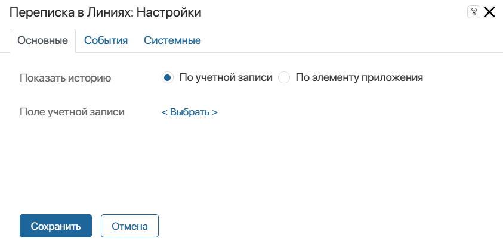
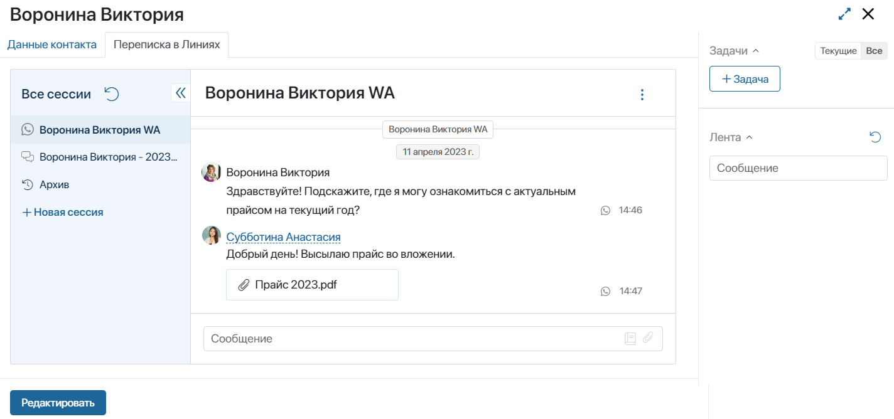
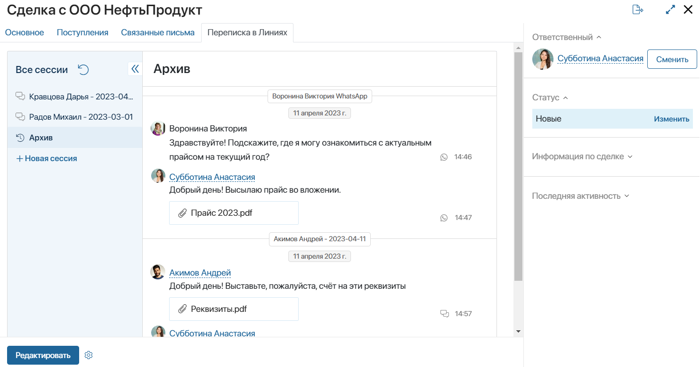

Виджет отображает историю переписки в сессиях раздела Линии. Он размещается на формах приложений системы и позволяет просматривать чаты с карточек элементов:
- операторам и супервизорам линии. Операторы могут вести переписки в назначенных на них сессиях или создавать новые;
- пользователям без доступа к разделу Линии. Для этого группе, в которую включён сотрудник, должен быть предоставлен доступ к сессиям для чтения в настройках линии.
Настройка виджета
Виджет Переписка в Линиях работает только на формах приложений, в контексте которых присутствует:
- свойство типа Учетная запись;
- свойство типа Приложение, ссылающееся на приложение с добавленным полем типа Учетная запись.
Чтобы настроить виджет:
- Перетащите его с правой панели дизайнера интерфейсов на поле для моделирования или нажмите кнопку + Виджет. Подробнее о размещении виджетов на формах приложений читайте в статье «Шаблон формы».
- В открывшемся окне на вкладке Основное выберите, какие сессии отображать в виджете:

- По учетной записи — отметьте опцию, чтобы находить сессии по учётным записям и показывать переписку из всех линий с определённым клиентом;
- Поле учетной записи — нажмите <Выбрать> и укажите свойство типа Учетная запись из контекста текущего или связанного с текущим приложений;
- По элементу приложения — отметьте опцию, чтобы показывать переписки из всех линий по связанному с сессией элементу приложения, например, по привязанной сделке или обращению;
- Приложение — нажмите <Выбрать> и укажите опцию Текущий элемент, чтобы отображать переписку по приложению, на форме которого размещаете виджет. Или выберите приложение с полем типа Учетная запись из контекста текущего.
- На вкладках События и Системные задайте настройки, одинаковые для всех виджетов. Вы можете управлять видимостью виджета, настраивать его поведение при наведении курсора, задавать стили и т. д. Подробнее читайте в статье «Системные настройки виджетов».
- Сохраните настройки.
- Чтобы виджет стал доступен пользователям, на верхней панели дизайнера интерфейсов нажмите кнопку Сохранить, а затем Опубликовать.
Примеры отображения переписки в виджете
Опция «По учетной записи»
Предположим, в компании настроено две линии, к которым подключены разные мессенджеры. В настройках обеих линий в качестве приложения для связи учётной записи указано приложение Контакты.
Клиент, у которого есть карточка в приложении Контакты, обратился в обе линии. В ELMA365 создались две сессии. В ходе переписки операторы с помощью кнопки + Связать привязывают сессии к контакту. После этого в карточку контакта добавятся учётные записи мессенджеров, с которых в линии пришли сообщения, а имя контакта будет отображаться на правой панели на страницах обеих сессий. Операторы смогут перейти из сессий в карточку контакта и просмотреть информацию о нём.
Чтобы в карточке контакта отображались переписки из всех сессий с ним, на форме приложения Контакты создадим отдельную вкладку и разместим на ней виджет Переписка в Линиях. В его настройках выберем опцию По учетной записи и укажем поле Учетные записи из контекста приложения.
В итоге, в карточке контакта можно увидеть переписку по его обращениям в линии.

Опция «По элементу приложения»
Допустим, клиенты из одной компании обратились в линии, в настройках которых в качестве приложения для фиксации обращения указано приложение Сделки. Операторы привязали к сессиям этих пользователей одну и ту же сделку.
Чтобы отобразить все чаты по связанному с сессиями элементу в его карточке, разместим на форме приложения Сделки виджет Переписка в Линиях. В его настройках отметим опцию По элементу приложения и выберем Текущий элемент.
В итоге, в карточке сделки можно увидеть чаты с клиентами по этой сделке.

Действия с сессиями и чатами в виджете
После настройки виджета можно:
- На левой панели увидеть список активных сессий клиентов, которые операторы привязали к элементу приложения. Сообщения в них смогут просматривать операторы и супервизоры линии, а также пользователи, у которых есть доступ к сессиям для чтения. Операторы смогут отвечать на сообщения клиентов в назначенных на них сессиях.
- В окне чата отображаются сообщения из выбранной слева сессии. Если клиент обратился в линию повторно через тот же канал связи, над сообщениями текущей сессии также отобразится более ранняя переписка. Например, клиент ранее связывался с техподдержкой компании через электронную почту. После решения проблемы оператор закрыл сессию. Если клиент снова пишет на электронный адрес, сообщения из предыдущего обращения отобразятся в виджете над сообщениями из текущей сессии. Обратите внимание, предыдущие сообщения определяются по каналу связи в рамках линии, поэтому более ранняя переписка отображается, даже если закрытая сессия не привязана к данному элементу приложения.
- Ознакомиться с сообщениями из всех закрытых сессий, связанных с элементом. Для этого в левом меню нажмите Архив.
- Операторы и супервизоры могут создать из виджета новую сессию. Для этого нужно нажать + Новая сессия, затем в открывшемся окне выбрать линию, контакт и его учётную запись.
- Скрыть или отобразить системные оповещения в чате, такие как применённое правило маршрутизации, переназначение оператора и т. д. Для этого на верхней панели справа от названия сессии нажмите значок три точки и установите нужное значение.